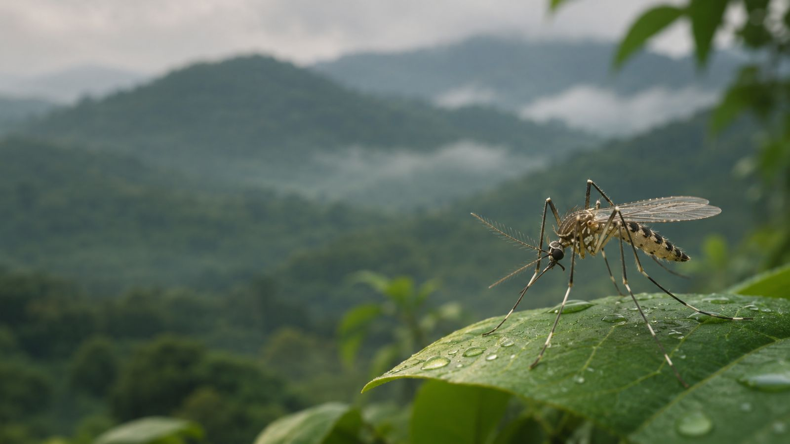

Research · Field dataset · Bandarban hills, 2022 – 2025
A descriptive analysis of 54 handwritten medical forms from malaria-positive patients, collected during an active anti-malaria program and transcribed into a structured dataset.

Read this first: every person in this dataset tested positive. There is no uninfected comparison group and no population denominator, so these figures describe the case series. They do not estimate malaria incidence or risk.
54 scanned handwritten Bangla forms, one per malaria-positive patient. Names were excluded during transcription.
20 columns, including age, ICT result, camp, time in the hill area, and prevention measures.
Counts, proportions, distributions and plots.
Age is available for all 54 records. All recorded patients are male.
39 of 54 patients were under 35.
32 records listed the rank "Sepoy".
Age range 21–54 years.
Time living in a hill area, not an individual measure of malaria exposure.
median months (4.0 years)
Observed range: 24–147 months.
Three mutually exclusive categories, derived from the two ICT indicator columns on each form.
ICT ticks describe recorded test results. A form with both boxes ticked is counted once, in "Both".
Number of positive tests recorded per patient.
had two or more positive tests.
Maximum recorded: 9 tests.
Without test dates, repeat counts cannot distinguish reinfection, relapse, persistence or follow-up testing.
Exploratory, for context only. Each denominator is the malaria-positive records within that duration band.
These percentages do not estimate the probability of contracting malaria at different exposure durations.
Number of forms from each camp, not camp-level malaria incidence. The largest single camp contributed 6 of 54 records. Camp names are withheld.
Altitude is a camp-level value, assigned to each person at that camp.
Number of camps
Number of patient records
A count of records at an altitude is not a malaria rate. Camp populations and observation periods are unknown.
A ticked measure on the patient form, not observed or verified use.
This is not evidence of the effectiveness of any measure.
"None recorded" describes this small, selected case series. It must not be read as zero clinical risk.
Without people who tested negative, the data cannot estimate prevalence or identify protective risk factors.
A high positive-test count does not prove recurrent, independent malaria episodes.
Every record lists MI-room treatment, and none records admission or cerebral malaria.
Altitude repeats for each camp and should not be analyzed as an individual-level exposure.
Next step: a comparative, time-resolved study.
Data notes. Percentages use n = 54 unless stated otherwise. "Both ticked" means both ICT indicator fields equal 1. Durations are in months. Altitude is assigned at the camp level. All charts are derived from the structured dataset; individual records are not published.